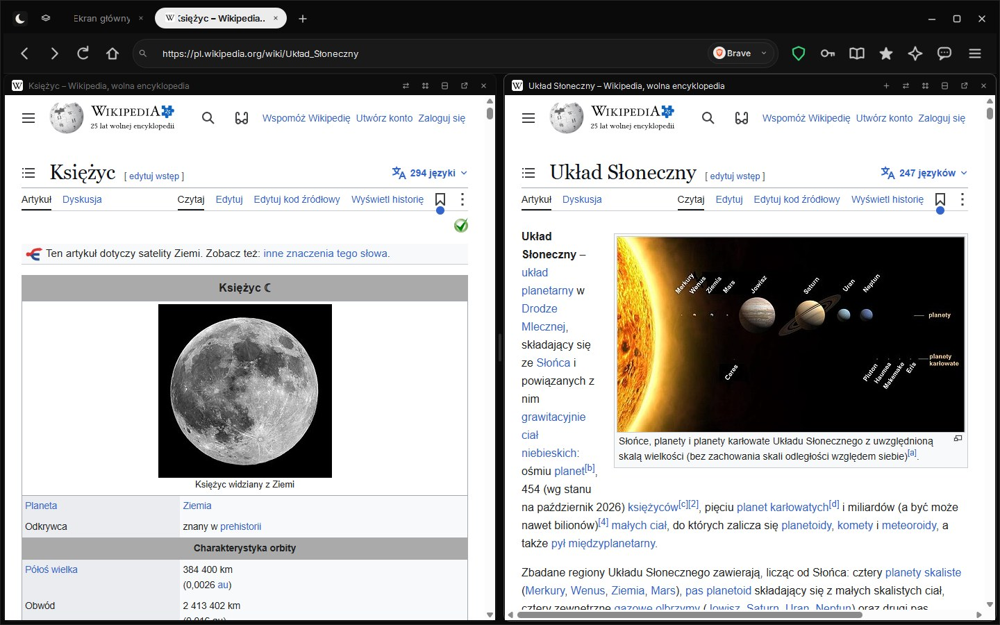
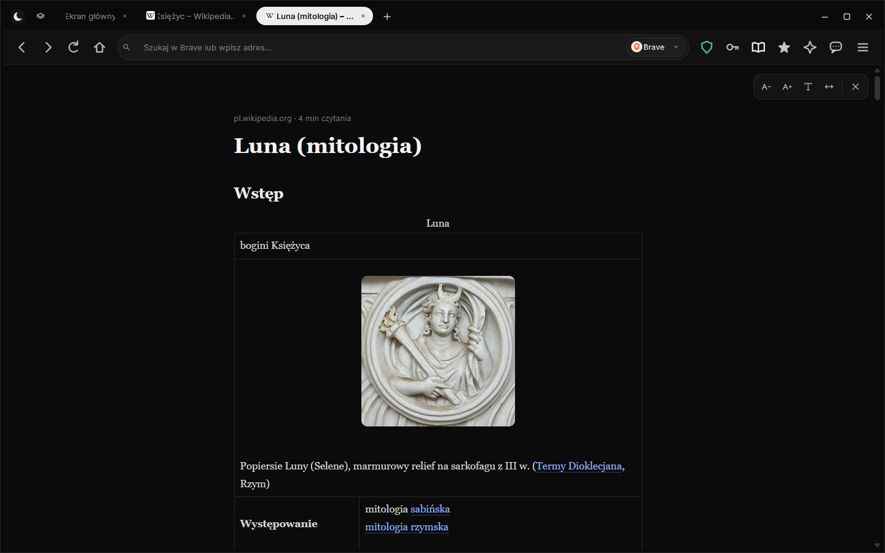

Co potrafi Luna
Funkcje, które w innych przeglądarkach wymagają kilku rozszerzeń, są tu wbudowane – i domyślnie po polsku.
Podział ekranu
Przeciągnij kartę na stronę – dwie albo trzy strony obok siebie. Zapisane układy i wspólne przewijanie.
Blokada reklam i śledzenia
Listy uBlock Origin, EasyList i polskie filtry. Także reklamy na YouTube i wstawki sponsorowane.
Asystent AI obok strony
ChatGPT, Claude, Gemini albo DeepSeek w panelu: podsumuj stronę, zapytaj o nią, porównaj karty.
Komunikatory z boku
WhatsApp, Messenger, Telegram, Instagram i Discord w panelu – wiadomości bez przełączania kart.
Kafelki i widgety
Pogoda, zadania, notatki, Pomodoro, rynki, paczki, RSS, odtwarzacz – ponad 20 widgetów w panelach bocznych.
Ctrl+K – wszystko w jednym
Polecenia, karty, historia i ustawienia w jednym polu. W pasku adresu: yt koncert, sp lofi.
Hasła i bezpieczeństwo
Hasła szyfrowane na komputerze, kody 2FA, ostrzeżenia przed fałszywymi stronami logowania.
Czytanie i nauka
Tryb czytania, tłumaczenie z każdego języka, zakreślenia i notatki, „Do przeczytania” offline.
Profile i synchronizacja
Osobna Luna do pracy i do domu. Synchronizacja przez Twój folder OneDrive albo Dysku Google.

